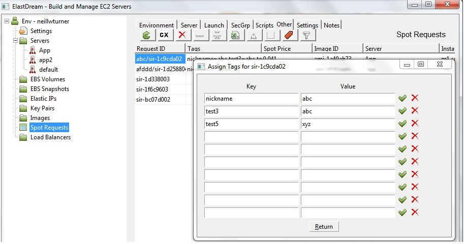

Using Resource Tags
Resource Tags
Amazon AWS supports the tagging of various resource like instances, EBS volumes and snapshots etc so you can identify them by name, group them and search for they using filters.Nickname Tag
The nickname tag is a standard tag that is specified in the Settings tab that is used to define a meaningful name for the resource. Go the the settings tab and enter the tag name in the NICKNAME_TAG field and press save.Assign Resource Tags to a Resource
To set the tags for and existing resource select it from the list and press theEdit the tag by pressing the

To set the tags when creating a new resource. Press the
When the resource is created the tags will also be created.
Filtering on Resource Tag
To filter the list of resources based on tags press the FilterThe filter is persisted so it is remembered. The Filter on the Servers is also used for the instances in the left-hand tree.